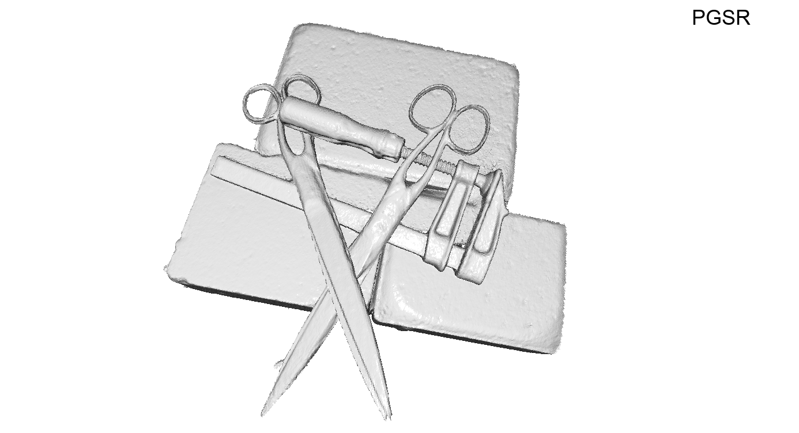
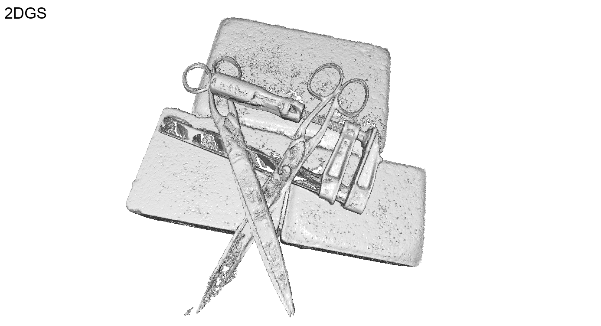

DTU


Recently, 3D Gaussian Splatting (3DGS) has attracted widespread attention due to its high-quality rendering, and ultra-fast training and rendering speed. However, due to the unstructured and irregular nature of Gaussian point clouds, it is difficult to guarantee geometric reconstruction accuracy and multi-view consistency simply by relying on image reconstruction loss. Although many studies on surface reconstruction based on 3DGS have emerged recently, the quality of their meshes is generally unsatisfactory. To address this problem, we propose a fast planar-based Gaussian splatting reconstruction representation (PGSR) to achieve high-fidelity surface reconstruction while ensuring high-quality rendering. Specifically, we first introduce an unbiased depth rendering method, which directly renders the distance from the camera origin to the Gaussian plane and the corresponding normal map based on the Gaussian distribution of the point cloud, and divides the two to obtain the unbiased depth. We then introduce single-view geometric, multi-view photometric, and geometric regularization to preserve global geometric accuracy. We also propose a camera exposure compensation model to cope with scenes with large illumination variations. Experiments on indoor and outdoor scenes show that our method achieves fast training and rendering while maintaining high-fidelity rendering and geometric reconstruction, outperforming 3DGS-based and NeRF-based methods.

Compared to 3DGS, we achieve global consistency in geometry reconstruction while maintaining similar rendering quality. Initially, we improve the modeling of scene geometry attributes by compressing 3D Gaussians into a 2D flat plane representation, which is used to generate plane distance and normal maps, and subsequently converted into unbiased depth maps. We then introduce single-view geometric, multi-view photometric, and geometric consistency loss to ensure global geometry consistency. Additionally, the exposure compensation model further improves reconstruction accuracy.


@article{chen2024pgsr,
title={PGSR: Planar-based Gaussian Splatting for Efficient and High-Fidelity Surface Reconstruction},
author={Danpeng Chen and Hai Li and Weicai Ye and Yifan Wang and Weijian Xie and Shangjin Zhai and Nan Wang and Haomin Liu and Hujun Bao and Guofeng Zhang},
booktitle={arxiv preprint arxiv:2406.06521},
year={2024}
}
```